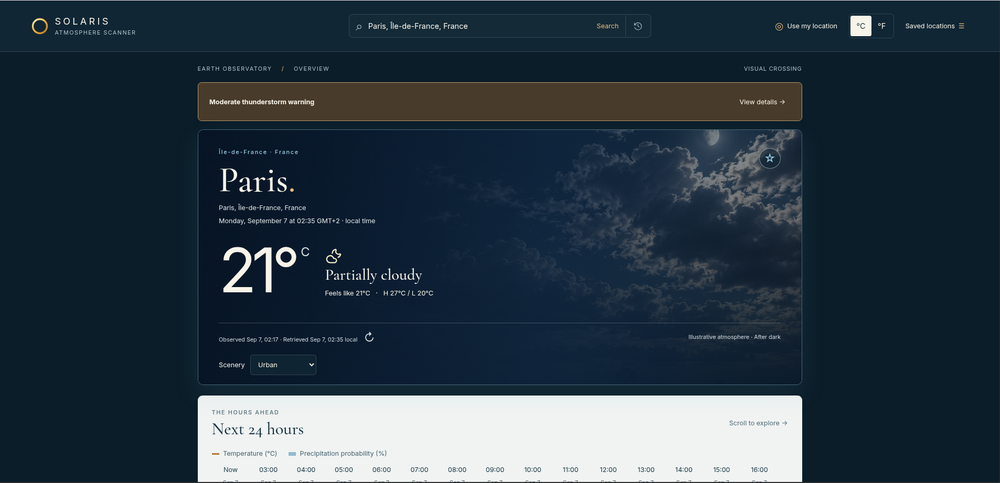
01 / Weather application
Weather App
A responsive weather application for searching locations, viewing current conditions and forecasts, saving locations, and working with live weather data through an external API.
Learning in public · Building with purpose
Aspiring Full-Stack Web Developer
I’m Clebson Costa. I combine growing front-end skills with a professional background in operations, economics, and data to build clear, useful digital experiences.
01 · About
I am strengthening my web development foundations through The Odin Project, with hands-on practice in HTML, CSS, JavaScript, Git, and GitHub.
Before transitioning into development, I built a multidisciplinary background across economics, data analysis, training administration, business operations, and process coordination. That experience taught me to translate complex needs into structured logic, improve workflows, and communicate clearly across teams.
I use AI intentionally—as a learning and problem-solving partner—while keeping ownership of the concepts and code I build. My goal is to connect technical execution with business reality and create purposeful digital solutions.
02 · Skills
The technologies I use today to structure, style, version, and add interaction to responsive web projects.
03 · Selected work

01 / Weather application
A responsive weather application for searching locations, viewing current conditions and forecasts, saving locations, and working with live weather data through an external API.
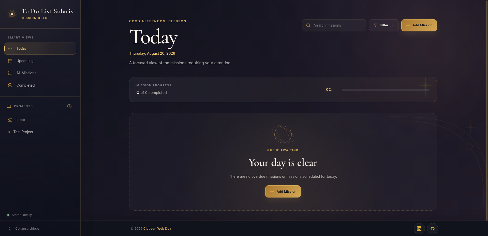
02 / Task management application
A modular task-management application for organizing missions, projects, priorities, deadlines, and completion states with persistent browser storage.
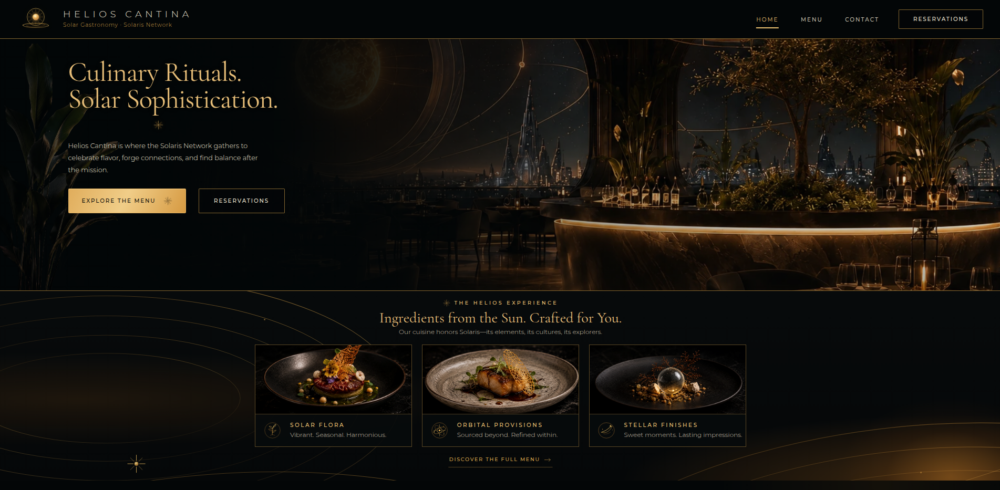
03 / Modular JavaScript application
A responsive restaurant website built as a JavaScript-rendered single-page experience, combining modular page components with a polished futuristic hospitality interface.
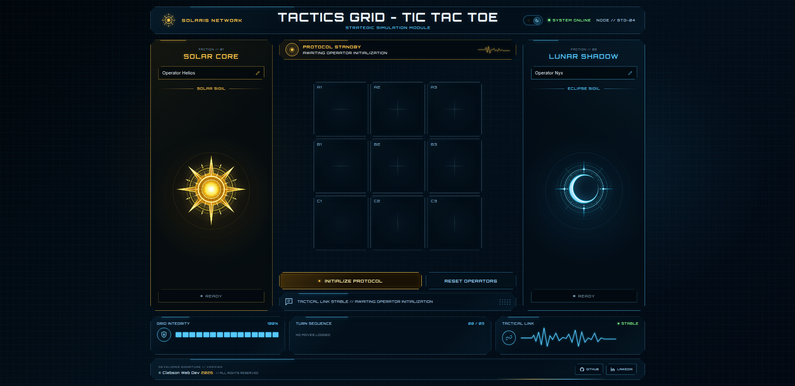
04 / JavaScript game architecture
A modular Tic Tac Toe game built to practice factory functions, encapsulation, game-state management, DOM separation, and structured JavaScript application design.
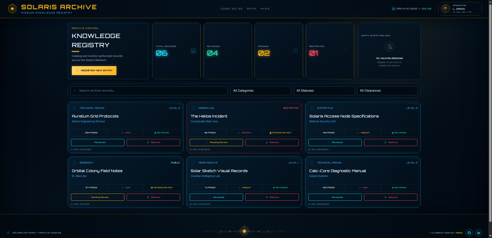
05 / JavaScript application
A personal library manager built to practise objects, arrays, DOM rendering, forms, events, and interface state.
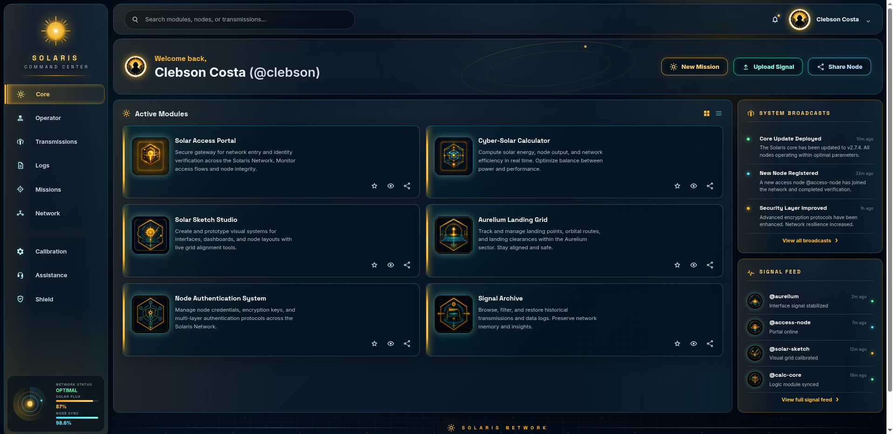
06 / Responsive interface
A responsive admin dashboard focused on CSS Grid, layout structure, reusable cards, hierarchy, and adaptive composition.
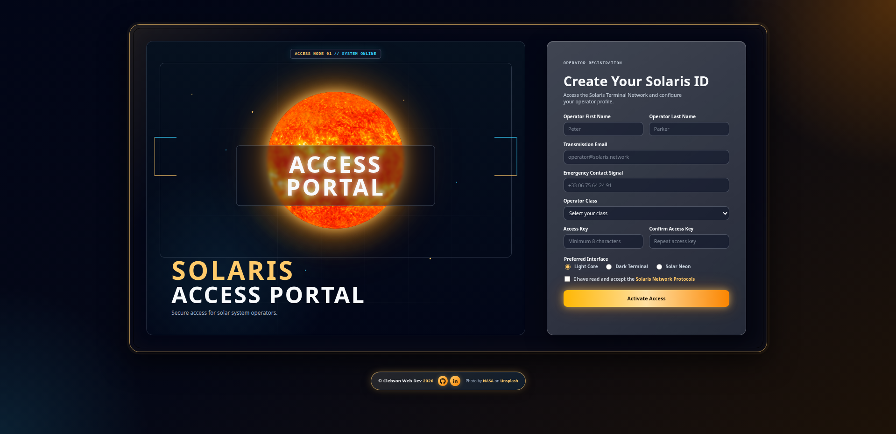
07 / Form design
A polished responsive form exploring structure, hierarchy, custom assets, and accessible input presentation.
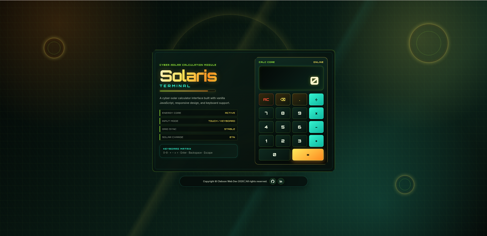
08 / JavaScript logic
A browser calculator built to practise functions, operator logic, DOM interaction, events, and interface state.
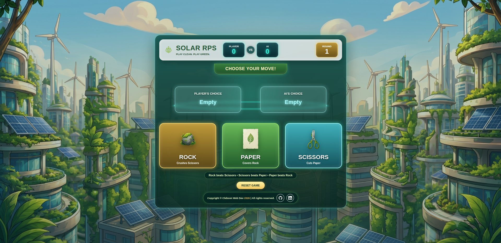
09 / Interactive game
A browser game for practising functions, conditionals, DOM manipulation, event listeners, and simple game logic.
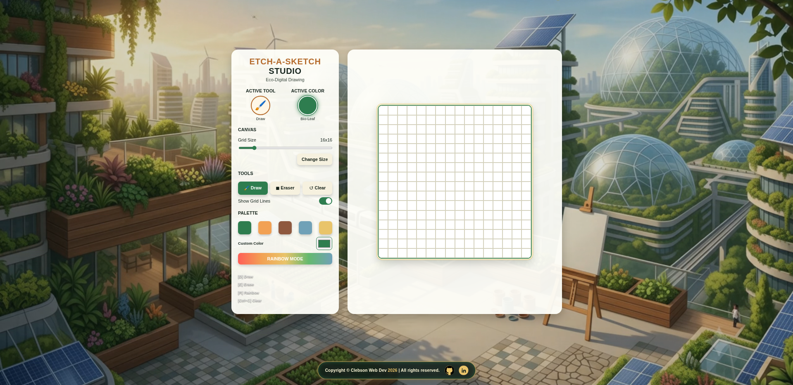
10 / DOM application
A dynamic drawing grid focused on element creation, loops, pointer input, event handling, and responsive updates.
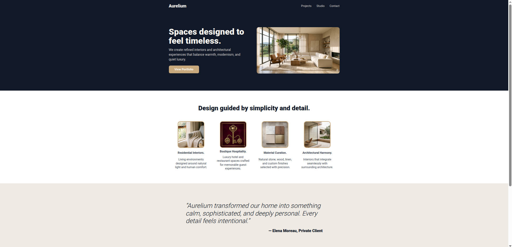
11 / Layout foundations
A responsive landing page focused on semantic structure, Flexbox, spacing, typography, and visual hierarchy.
04 · Learning journey
A practical path from front-end foundations toward complete full-stack applications.
HTML, CSS, JavaScript fundamentals, Git, and responsive design.
Objects, modules, code organisation, problem-solving, and projects.
DOM applications that connect structure, behaviour, and usability.
React, Node.js, Express, PostgreSQL, APIs, testing, and deployment.
05 · Contact
I’m open to junior opportunities, internships, freelance projects, and thoughtful collaborations.
Send me an email